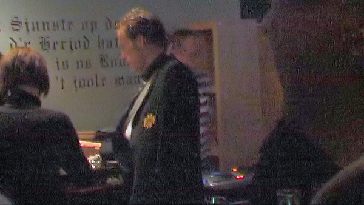

Wegens het souperen van een gewonnen arrangement deze keer een verslag vanaf
de noordzijde.
Er wordt afgetrapt met een aspergesoep met een kransje van zalm en
asperges-ijs. Zeer creatief!
Na het culinair genoegen blijkt vak N10 NIET leuk te zijn...
Matondo raakt al na zeventien minuten geblesseerd. Waarschijnlijk een
scheurtje in de hamstring.
Bas Sibum aan de bal. Voor de winterstop nog Roda-speler.
Castro moet tot het uiterste rekken om een vreemde boogbal voortkomend uit
een doorgetikte
hoekschop uit het doel te tikken.
Alweer een hoekschop voor NEC. De Nijmegenaren combineren beter, zijn sterk
in de omschakeling en
zijn dreigender voor doel. Roda JC is de ploeterende ploeg die meest in
balbezit is, maar weinig af weet
te dwingen.
De hoekschop van El-Akchaoui waarbij Van Beukering een forse duw aan
Tioté geeft.
0-1, (32'). Scheidsrechter Van Boekel die al de hele tijd tegen Roda fluit
heeft ook nu niks gezien....
Een minuut later maakt Van Boekel het nog bonter door Tioté met rood van het
veld te sturen omdat de
middenvelder een slaande beweging gemaakt zou hebben naar Davids.
In het tumult dat volgt krijgen ook trainer Atteveld en verzorger Keulen een
rode kaart.
NEC buit de overtal-situatie pas laat in de wedstrijd uit met deze pass
die...
Lens bereikt. Deze kapt Kah uit en schiet vervolgens....
0-2 binnen, net buiten bereik van Castro, (68').
Feestende NEC-supporters.
Een blessurebehandeling bij NEC verloopt te traag volgens Kah.
"Verzorger" Kah ruimt de rotzooi op terwijl NEC-trainer Been voor een wissel
gebaart.
Een hoog overgeschoten vrije trap van Bodor in de slotfase.
Ook dat nog! Saeijs moet in de drie minuten extra tijd per brancard van het
veld af vanwege een
ontwrichte schouder.
Nogmaals: N10 is NIET leuk. Welke gek betaalt 400 euro voor dit sfeerloze
zombievak gelardeerd met
uitsupporters?!
N10 is een strafkolonie.

Saeijs met de arm in de plak.